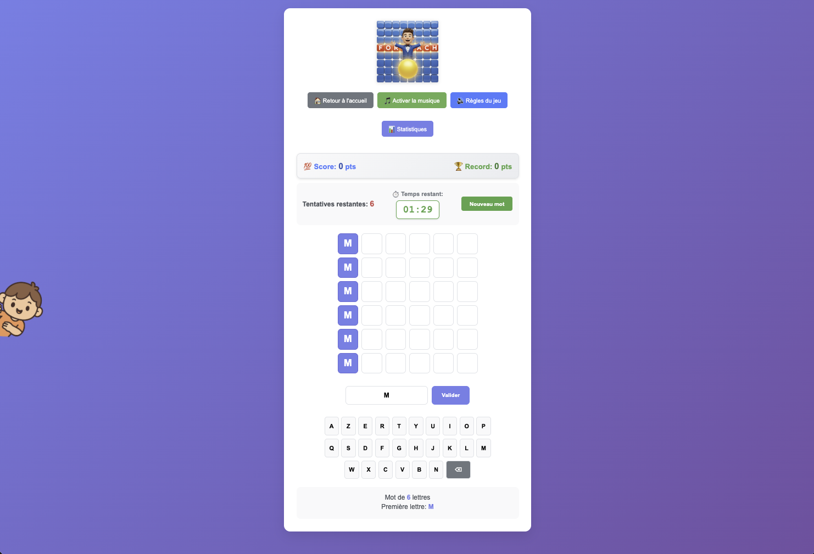

Motus
Jeu de lettres inspiré du célèbre jeu télévisé, avec grille dynamique et effets UI.

Stack
- HTML/CSS/JavaScript
- LocalStorage pour les statistiques
Fonctionnalités
- Grille dynamique 6x5
- Effets UI et animations
- Dictionnaire français
- Statistiques en temps réel
- Design responsive
- Accessibilité (navigation clavier)
Apprentissages
- Manipulation avancée du DOM
- Algorithmes de comparaison de mots
- Animations CSS et transitions
- Gestion des événements clavier
- Stockage local des données utilisateur